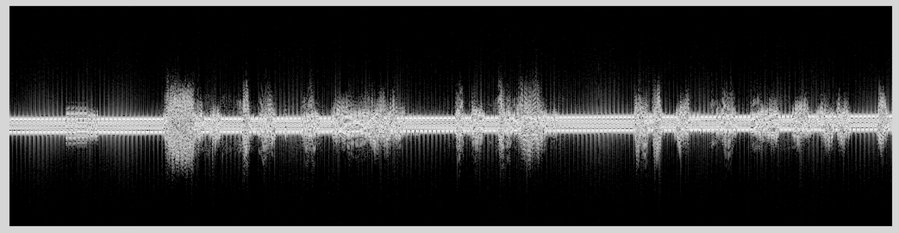
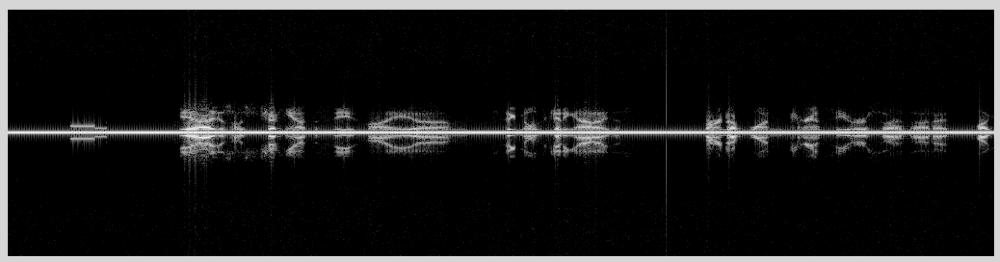

Lab 4: Narrowband FM#
(Adapted from Dr. John Pauly’s Stanford University EE179 course website: https://web.stanford.edu/class/ee179/Homework.html.)
Overview#
Last week you learned to find AM signals, and then demodulate and decimate them down to a baseband signal you could listen to. For AM, simply taking the absolute value of the complex signal detects the envelope, and gives you the audio waveform.
This week we will look at narrowband FM. Finding the signals and the initial demodulation and decimation process are the same as for AM. The difference lies in how you detect the message in the FM signal. We will implement a simple method for this, and listen to two bands that have a lot of narrowband FM traffic, amateur radio, and police/fire/emergency radio.
Aims of the Lab#
The goal of this lab are to learn how to detect messages in narrowband FM signals.
Narrowband FM Signals#
Narrowband FM is commonly used in Amateur Radio in the 144–148 MHz VHF band and the 420–450 MHz UHF band, where the bandwidth required for the FM signal is acceptable. It is also commonly used for Police, Fire, and Emergency Services, although it is increasingly being replaced by digital radio systems that are harder to decode.
We’ll start with the VHF Amateur Radio band. The following file is a capture of 2.048 MHz of the RF spectrum centered at 145.5 MHz.
The upper end (well actually, most) of the VHF amateur band is allocated to FM repeaters. These are moderately powerful radios (50-100W) located in high places that listen on one frequency and transmit on another. In the VHF band this offset is +/- 600 kHz, which is far enough apart to allow the repeater to listen and transmit at the same time. The offset is +/- 5 MHz in the UHF band, where more spectrum is available.
Repeaters are important because radio communications in the VHF band (and above) are essentially limited to line of sight. This isn’t very far when hills and buildings are in the way. However, repeaters are located in high places like the tops of mountains. If you and the person you want to communicate with can see the same repeater/mountain, you can talk to each other. This allows people in large areas to communicate.
One of the most active repeaters in the valley is N6NFI, operating at a transmit frequency of 145.230 MHz. This repeater is located right above Stanford on the south end of the hill with the Dish. If you walk the Dish path starting at Stanford Avenue, the N6NFI antenna is one of the antennas located on the left shortly after you reach the top of the hill. Someone is talking on this channel most of the day. The busiest time is from 9 AM to about 11 AM, when the “9 O’Clock Net” is happening. People call in to talk about all sorts of things, radio related and otherwise. If you want to get people going, call in and ask what “ground” really means!
Load the data file, and see if you can find the frequency offset for the N6NFI repeater. It is the strongest signal in the data, so it should be pretty obvious. Demodulate the signal, and decimate it by a factor of 64 (in two stages of 8, as before). Report the offset frequency you found in your lab report.
If you plot the spectrogram of the resulting demodulated and decimated signal dfm,
you should see something like this

If you plot the magnitude of the signal,
it should be almost constant. This is because all of the information is in the phase. Include a screen shot of this plot in your report.
Decoding Narrowband FM Signals#
From class, the way you would expect to extract the audio waveform from the FM signal would be to differentiate the angle of the signal
>> ddfm = diff(angle(dfm));
This doesn’t work very well, although it can be fixed up.
A better idea is to detect the message from the FM signal with this
>> ddfm = angle(conj(dfm(1:end-1)).*dfm(2:end)));
Explain what this does and why it works in your lab report. An even simpler version replaces the angle() operation with taking the imaginary part with imag(). Try this. Why does this work?
The spectrogram of the resulting signal now should look like this

This is a beautiful audio spectrum. Note the short segments of constant frequency at the beginning of the signal. You will hear when you play the signal back.
Scale the signal to a maximum value of 1, and play it through your sound card
>> ddfm = ddfm/max(abs(ddfm));
>> sound(dddm, 32000)
You should hear very clear audio, much clearer than the AM signal from last week. This is the reason FM is so widely used. If the signal is above a threshold so that the phase can be accurately determined, the result is essentially perfect audio. The price for this is that the transmitter is putting out a full amplitude frequency modulated sinusoid continuously no matter what the input is. This requires even more power than AM. However, the amplifier doesn’t need to be linear if the harmonics are filtered out after the output stage. This allows FM amplifiers to be much less expensive than linear AM amplifiers, so the overall cost of an FM transmitter can be much less than for an AM transmitter of the same power and frequency.
One of the things you hear in the audio is a background hum. You can also see it in the spectrogram as two continuous frequency lines on either side of DC. This sounds and looks like an artifact, but is actually put there on purpose. One of the problems with repeaters is that they retransmit everything they hear at their receive frequency. This could be noise or interference, or even another repeater. To solve this repeaters only retransmit signals if they contain a specific tone. This indicates that the signal was intended for them, and should be retransmitted. The tones are chosen to be “sub-audible” around 100 Hz, but clearly you can hear them. Some repeaters suppress the tone when they retransmit a signal. N6NFI does not, as you can hear.
The tone is called a CTCSS code for “Continuous Tone Coded Squelch System”, or more commonly as a PL code for Motorola’s trademark name “Private Line”. There are also lots of other access methods that use digital codes, tone bursts, or tones at higher frequencies. These are less common.
Use a segment from the data to determine what the CTCSS frequency is for N6NFI. Look it up on the web (google “N6NFI and CTCSS”) to see if you are right.
Packaging Up Your FM Receiver#
Make an m-file that packages up your FM receiver. Call it fm_dc.m for “FM Decoder”. Include another decimation stage AFTER the FM detection, since the audio bandwidth is only about +/- 2.5 kHz, which doesn’t require the 32 kHz sampling frequency that we have at this point. For lower SNR data this can greatly improve the quality of the signal. However, this data is clean enough it doesn’t make very much difference.
Capture Some FM Signals and Decode Them#
Capture a band where you expect to find narrowband FM signals (not the broadcast band, we’ll get to that next week). The bands you looked at in Lab 1 are a good place to start. Use the rtl_sdr command line routine to save data to a file, and then decode it with your fm_dc.m matlab routine. Submit a spectrogram of the signal, and a description of what you heard.
Odd Fact#
Try your AM receiver m-file on a narrowband FM signal. Why does this work at all? It works better as the AM receiver bandwidth is narrowed, and as you move slightly off the transmit frequency.
Lab Report#
Include answers to these questions in your lab report.
1. What was the offset frequency for N6NFI?
2. Plot the magnitude of the demodulated and decimated FM signal to show that it is essentially constant. There will be some noise, but it turns out that noise in the magnitude has very little effect on the detected FM signal. Why is that?
3. What is the problem with using diff(angle(RF_DATA))) to detect the FM signal? How does the approach proposed above work? And why can the angle operation be replaced with taking the imaginary component, and have it still work?
4. What is the CTCSS frequency for N6NFI?
5. Find a narrowband FM signal somewhere in the spectrum, capture it, and decode it. Include a spectrogram of the baseband (detected and decimated) signal, and a description of what you heard.
6. Why does using your AM receiver on an FM signal work at all? This is a non-trivial question, so any reasonable answer will be accepted.
Next Week#
Next week we’ll start looking at commercial FM signals. These have lots of different components, including the stereo signal you usually think of, plus several digital radio streams, digital data for your car radio, and subcarriers for Muzak, and other targeted programming.